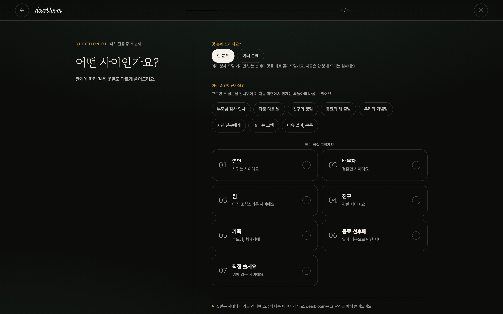
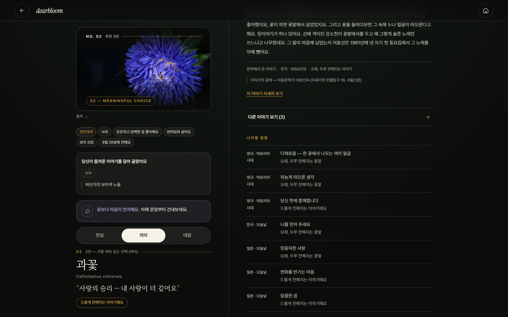
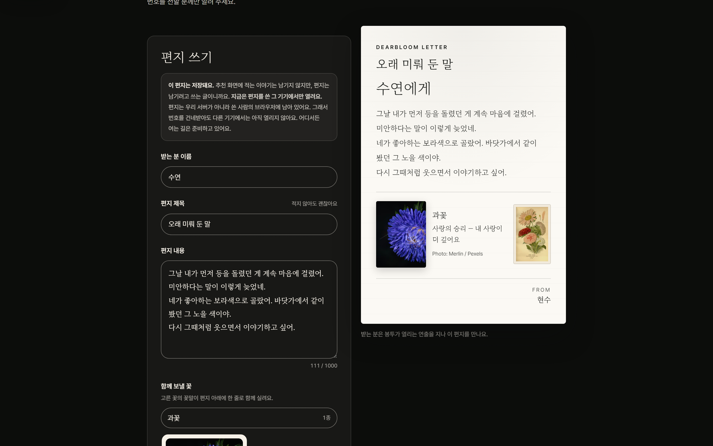

AI 구조·프로토타입
AI는 마음을 읽고,
검증된 데이터는 사실을 지킵니다
안전 원칙
사실은 데이터에서, AI는 해석과 표현에서 사용합니다.
지금 실제로 동작하는 화면

01 · 추천 입력 화면
관계와 마음부터 선택

02 · 추천 결과 화면
왜 이 꽃인지 설명

03 · 이야기·안전 화면
크게 위험한 꽃은 추천 전 제외

04 · 편지·꽃 조합기
꽃과 함께 전할 문장
실제 구매처로 연결
현재 직접 눌러볼 수 있는 기능
관계·상황 기반 꽃 3안 추천
자유 서술을 반영한 추천 변화
반려동물 위험 꽃 제외
꽃말·나라별 의미·설화·문학 확인
여러 사람 각각 추천 및 단체 부케
카드 문구 수정·새로 받기
비밀 편지
꽃 조합기
366일 탄생화
구매처 탐색
AI가 하는 일
VS
검증 데이터·엔진
“첫눈을 함께 봤어요” 같은 자유 문장 이해
취향·추억·분위기 단서 추출
추천 꽃에 맞는 자연스러운 메시지 작성
사용자의 말투에 맞춰 문장 다듬기
꽃말과 출처 확인
고양이·강아지 안전성 판단
크게 위험한 꽃·비선호 꽃 강제 제외
관계·상황·계절·취향 점수와 3안 다양성
지켜지는 것
- AI가 출처 없는 꽃말을 만들지 않음
- AI가 반려동물 독성을 추측하지 않음
- 메시지 생성 실패 시 검토된 예문으로 폴백
- 추억과 편지 원문은 공유 URL과 분석 로그에 남기지 않음
정적 데모 고지
공모전용 Netlify 데모는 서버 없이 동작한다. 추천·안전·꽃말·이야기는 실제 엔진과 데이터를 쓰고,
카드 문구는 API 키를 노출하지 않기 위해 미리 검토한 예문을 쓴다. 본배포는 서버에서 AI 메시지 생성이 가능하다.
이 차이를 숨기지 않고 화면에서 안내한다.
AI 구조·프로토타입
04/05